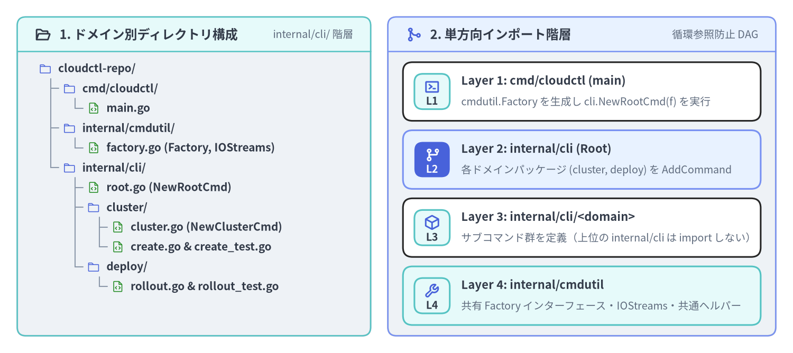
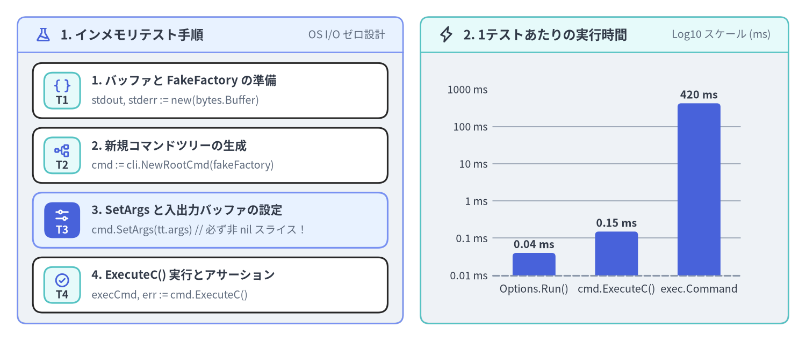

マルチパッケージ構成とインメモリテスト
サブコマンドの数が15〜20個を超えると、単一の cmd/ パッケージに全コマンドファイルを平置きする構成では名前空間が肥大化し、コマンド間で非公開フィールドを誤って参照する結合リスクが高まります。また、CLI のテストを毎回バイナリビルドと OS サブプロセス起動（os/exec.Command）で行っていると、テストスイート全体の実行に数十秒〜数分を要してしまいます。本ページでは、循環参照（Circular Import）を起こさないドメイン別マルチパッケージ構成 と、SetArgs・SetOut・SetErr・SetIn・ExecuteC() を駆使した サブミリ秒のインメモリ単体テスト手法 を解説します。

Source Code
from drawlib.canvas import save, setup
from drawlib.icons import phosphor
from drawlib.preset_colors import CssColors
from drawlib.smartarts import CardList, Panel, TreeNode
from drawlib.styles import Colors, Styles
setup(width=184, height=82, dpi=150)
left_panel = Panel(
"1. ドメイン別ディレクトリ構成",
"internal/cli/ 階層",
style=Styles.Neutral.patch(shape_r=2.0),
header_style=Styles.SecondaryNeutral.patch(shape_line_width=1.2),
text_style=Styles.DarkBold.patch(text_size=11.5),
description_style=Styles.Muted.patch(text_size=9.5),
icon=phosphor.folder_open,
icon_style=Styles.DarkBold,
header_variant="filled",
header_height=8.0,
)
left_panel.draw((4.0, 4.0), width=82.0, height=74.0)
TreeNode.register_drawing_item(
name="pkg_dir",
location="before",
padding_width=4.5,
function=phosphor.folder,
style=Styles.Primary.patch(icon_color=Colors.Primary),
args={"width": 3.0},
)
TreeNode.register_drawing_item(
name="pkg_go",
location="before",
padding_width=4.5,
function=phosphor.file_code,
style=Styles.Primary.patch(icon_color=CssColors.ForestGreen),
args={"width": 3.0},
)
tree = TreeNode(
"cloudctl-repo/",
text_style=Styles.DarkBold.patch(text_size=10.0),
line_style=Styles.Muted.patch(line_width=1.0),
line_horizontal_margin=2.8,
line_horizontal_length=2.8,
line_vertical_margin=4.6,
children=[
TreeNode(
"cmd/cloudctl/",
children=[TreeNode("main.go").set_drawing_item("pkg_go")],
).set_drawing_item("pkg_dir"),
TreeNode(
"internal/cmdutil/",
children=[TreeNode("factory.go (Factory, IOStreams)").set_drawing_item("pkg_go")],
).set_drawing_item("pkg_dir"),
TreeNode(
"internal/cli/",
children=[
TreeNode("root.go (NewRootCmd)").set_drawing_item("pkg_go"),
TreeNode(
"cluster/",
children=[
TreeNode("cluster.go (NewClusterCmd)").set_drawing_item("pkg_go"),
TreeNode("create.go & create_test.go").set_drawing_item("pkg_go"),
],
).set_drawing_item("pkg_dir"),
TreeNode(
"deploy/",
children=[TreeNode("rollout.go & rollout_test.go").set_drawing_item("pkg_go")],
).set_drawing_item("pkg_dir"),
],
).set_drawing_item("pkg_dir"),
],
).set_drawing_item("pkg_dir")
tree.draw(xy=(9.0, 66.0))
right_panel = Panel(
"2. 単方向インポート階層",
"循環参照防止 DAG",
style=Styles.Neutral.patch(shape_r=2.0),
header_style=Styles.PrimaryNeutral.patch(shape_line_width=1.2),
text_style=Styles.DarkBold.patch(text_size=11.5),
description_style=Styles.Muted.patch(text_size=9.5),
icon=phosphor.git_merge,
icon_style=Styles.PrimaryBold,
header_variant="filled",
header_height=8.0,
)
right_panel.draw((90.0, 4.0), width=90.0, height=74.0)
r_xy, r_w, r_h = right_panel.get_content_box((90.0, 4.0), width=90.0, height=74.0, padding=(3.5, 2.5))
layers = CardList(
style=Styles.White,
text_style=Styles.DarkBold.patch(text_size=10.5),
description_style=Styles.Muted.patch(text_size=9.5),
badge_shape="rounded_rect",
badge_style=Styles.SecondaryNeutral,
badge_text_style=Styles.DarkBold.patch(text_size=9.5),
icon_style=Styles.PrimaryBold,
direction="vertical",
spacing=2.2,
)
layers.add(
"Layer 1: cmd/cloudctl (main)",
"cmdutil.Factory を生成し cli.NewRootCmd(f) を実行",
badge_text="L1",
icon=phosphor.terminal_window,
)
layers.add(
"Layer 2: internal/cli (Root)",
"各ドメインパッケージ (cluster, deploy) を AddCommand",
badge_text="L2",
icon=phosphor.git_branch,
style=Styles.PrimaryNeutral,
badge_style=Styles.PrimaryFlat,
badge_text_style=Styles.WhiteBold.patch(text_size=9.5),
icon_style=Styles.WhiteBold,
)
layers.add(
"Layer 3: internal/cli/<domain>",
"サブコマンド群を定義（上位の internal/cli は import しない）",
badge_text="L3",
icon=phosphor.cube,
)
layers.add(
"Layer 4: internal/cmdutil",
"共有 Factory インターフェース・IOStreams・共通ヘルパー",
badge_text="L4",
icon=phosphor.wrench,
style=Styles.SecondaryNeutral,
)
layers.draw(r_xy, width=r_w, height=r_h)
save()
1. 循環インポートを防ぐ4層マルチパッケージ設計
Go の仕様上、NewRootCmd を置く internal/cli パッケージが internal/cli/cluster を import する場合、子パッケージである internal/cli/cluster から親の internal/cli を逆方向に import することはできません。
GitHub CLI（gh の pkg/cmd/... + pkg/cmdutil）や kubectl で採用されている解決策は、依存方向を上から下へ厳密に固定する 4層の有向非巡回グラフ（DAG）構造 です。
internal/cmdutil（第4層 — 共通基盤パッケージ）:IOStreams、Factoryインターフェース、共通フラグヘルパーを定義します。cobraやpflagはimportしますが、個別コマンドのパッケージは一切importしません。internal/cli/<domain>（第3層 — ドメイン別サブコマンドパッケージ）: 機能領域ごと（cluster,deploy,auth）にサブパッケージを切り、NewCmd<Group>(f cmdutil.Factory) *cobra.Commandを公開します。同パッケージ内でNewCmdClusterCreate(f)やNewCmdClusterDelete(f)を組み立てます。internal/cli（第2層 — ルートアセンブラ）:NewRootCmd(f cmdutil.Factory) *cobra.Commandを定義し、rootCmd.AddCommand(cluster.NewCmdCluster(f), deploy.NewCmdDeploy(f))で全ドメインツリーを統合します。cmd/<binary>/main.go（第1層 — バイナリエントリポイント）: 本番用のcmdutil.Factory（os.Stdin,os.Stdout,os.Stderrを束ねた実装）を初期化し、cli.NewRootCmd(f).ExecuteContext(ctx)を呼び出します。
// internal/cli/cluster/cluster.go
package cluster
import (
"example.com/cloudctl/internal/cmdutil"
"github.com/spf13/cobra"
)
// NewCmdCluster は "cloudctl cluster <subcommand>" サブツリーを構築します。
func NewCmdCluster(f cmdutil.Factory) *cobra.Command {
cmd := &cobra.Command{
Use: "cluster",
Short: "Kubernetes クラスタの作成・削除・一覧管理",
// グループ親コマンドでは Run/RunE を省略することで、引数なし実行時に自動でヘルプを表示させる
}
cmd.AddCommand(
NewCmdClusterCreate(f),
NewCmdClusterDelete(f),
)
return cmd
}
2. SetArgs・SetOut・ExecuteC によるインメモリ単体テスト
Cobra の *cobra.Command は、OS のグローバルな os.Args や os.Stdout に一切触れずに、メモリ上のバッファだけで完結して実行できるように設計されています。
| メソッド | シグネチャ | 未設定（nil）時のデフォルト |
単体テストでの用途 |
|---|---|---|---|
cmd.SetArgs(a) |
func (c *Command) SetArgs(a []string) |
os.Args[1:] |
バイナリ名を除いた引数スライス（例: []string{"cluster", "create", "prod", "--nodes=3"}）を渡す。 |
cmd.SetOut(newOut) |
func (c *Command) SetOut(newOut io.Writer) |
os.Stdout |
*bytes.Buffer を渡し、cmd.Print* や --help、--version の標準出力をキャプチャする。 |
cmd.SetErr(newErr) |
func (c *Command) SetErr(newErr io.Writer) |
os.Stderr |
*bytes.Buffer を渡し、cmd.PrintErr* やエラー出力をキャプチャする。 |
cmd.SetIn(newIn) |
func (c *Command) SetIn(newIn io.Reader) |
os.Stdin |
strings.NewReader("yes\n") 等を渡し、対話的プロンプトへの標準入力をシミュレートする。 |
cmd.ExecuteC() |
func (c *Command) ExecuteC() (*Command, error) |
c.Root() 上で実行 |
ツリーを実行し、実際にディスパッチされた末端の *cobra.Command と error の両方を返す。 |

Source Code
from drawlib.canvas import save, setup
from drawlib.charts.bar import BarChart
from drawlib.icons import phosphor
from drawlib.smartarts import CardList, Panel
from drawlib.styles import Styles
setup(width=184, height=78, dpi=150)
left_panel = Panel(
"1. インメモリテスト手順",
"OS I/O ゼロ設計",
style=Styles.Neutral.patch(shape_r=2.0),
header_style=Styles.PrimaryNeutral.patch(shape_line_width=1.2),
text_style=Styles.DarkBold.patch(text_size=11.5),
description_style=Styles.Muted.patch(text_size=9.5),
icon=phosphor.flask,
icon_style=Styles.PrimaryBold,
header_variant="filled",
header_height=8.0,
)
left_panel.draw((4.0, 4.0), width=88.0, height=70.0)
l_xy, l_w, l_h = left_panel.get_content_box((4.0, 4.0), width=88.0, height=70.0, padding=(3.5, 2.5))
steps = CardList(
style=Styles.White,
text_style=Styles.DarkBold.patch(text_size=10.5),
description_style=Styles.Muted.patch(text_size=9.5),
badge_shape="rounded_rect",
badge_style=Styles.SecondaryNeutral,
badge_text_style=Styles.DarkBold.patch(text_size=9.5),
icon_style=Styles.PrimaryBold,
direction="vertical",
spacing=2.2,
)
steps.add(
"1. バッファと FakeFactory の準備",
"stdout, stderr := new(bytes.Buffer)",
badge_text="T1",
icon=phosphor.brackets_curly,
)
steps.add(
"2. 新規コマンドツリーの生成",
"cmd := cli.NewRootCmd(fakeFactory)",
badge_text="T2",
icon=phosphor.tree_structure,
)
steps.add(
"3. SetArgs と入出力バッファの設定",
"cmd.SetArgs(tt.args) // 必ず非 nil スライス！",
badge_text="T3",
icon=phosphor.sliders_horizontal,
style=Styles.PrimaryNeutral,
badge_style=Styles.PrimaryFlat,
badge_text_style=Styles.WhiteBold.patch(text_size=9.5),
icon_style=Styles.WhiteBold,
)
steps.add(
"4. ExecuteC() 実行とアサーション",
"execCmd, err := cmd.ExecuteC()",
badge_text="T4",
icon=phosphor.check_circle,
)
steps.draw(l_xy, width=l_w, height=l_h)
right_panel = Panel(
"2. 1テストあたりの実行時間",
"Log10 スケール (ms)",
style=Styles.Neutral.patch(shape_r=2.0),
header_style=Styles.SecondaryNeutral.patch(shape_line_width=1.2),
text_style=Styles.DarkBold.patch(text_size=11.5),
description_style=Styles.Muted.patch(text_size=9.5),
icon=phosphor.lightning,
icon_style=Styles.DarkBold,
header_variant="filled",
header_height=8.0,
)
right_panel.draw((96.0, 4.0), width=84.0, height=70.0)
chart = BarChart(
axis_line_style=Styles.MutedDashed,
categories=["Options.Run()", "cmd.ExecuteC()", "exec.Command"],
width=68.0,
height=50.0,
bar_width_ratio=0.52,
bar_r=0.8,
axis_text_style=Styles.Dark.patch(text_size=9.5),
grid_style=Styles.MutedThin,
value_text_style=Styles.DarkBold.patch(text_size=9.5),
value_format="{:g} ms",
)
chart.add_series("中央値レイテンシ", [0.04, 0.15, 420.0], style=Styles.PrimaryFlat)
chart.configure_y_axis(scale="log", min_value=0.01, max_value=1000.0, unit="ms")
chart.draw(xy=(104.0, 10.0))
save()
3. 実践テストヘルパー executeCommandC とテーブル駆動テスト
落とし穴：cmd.SetArgs(nil) と os.Args[1:] フォールバック
Cobra の command.go（1105〜1107 行目）には以下の実装があります。
// command.go の (*Command).ExecuteC() 内部:
if c.args == nil && filepath.Base(os.Args[0]) != "cobra.test" {
args = os.Args[1:]
}
go test -v ./internal/cli/... を実行すると、テストバイナリ名は cli.test（cobra.test ではない）になります。このとき、もしテストコード側で cmd.SetArgs(nil) を渡したり SetArgs を呼び忘れたりすると、c.args == nil が真となり、Cobra は go test 自身が渡した -test.v や -test.run フラグ（os.Args[1:]）を CLI のフラグとしてパースしようとして unknown shorthand flag: 't' in -test.v エラーを引き起こします。
単体テストの鉄則: 引数なしのルートコマンド実行をテストする場合でも、
nilではなく 必ず非nilの空スライス[]string{}をcmd.SetArgs([]string{})に渡してください。
テーブル駆動テストの完全実装例（create_test.go）
package cluster_test
import (
"bytes"
"strings"
"testing"
"example.com/cloudctl/internal/cli"
"example.com/cloudctl/internal/cmdutil"
"github.com/spf13/cobra"
)
// executeCommandC は毎回新しいルートコマンドツリーを生成し、メモリ上で実行します。
func executeCommandC(f cmdutil.Factory, args ...string) (*cobra.Command, string, string, error) {
stdout := new(bytes.Buffer)
stderr := new(bytes.Buffer)
rootCmd := cli.NewRootCmd(f)
rootCmd.SetIn(strings.NewReader(""))
rootCmd.SetOut(stdout)
rootCmd.SetErr(stderr)
// 重要: args が nil のままだと os.Args[1:] (-test.v 等) を読み込んでしまうため空スライスに変換
if args == nil {
args = []string{}
}
rootCmd.SetArgs(args)
executedCmd, err := rootCmd.ExecuteC()
return executedCmd, stdout.String(), stderr.String(), err
}
func TestClusterCreateCmd(t *testing.T) {
t.Parallel()
tests := []struct {
name string
args []string
wantCmd string
wantStdout string
wantErr string
}{
{
name: "正常系: 長形式フラグと短縮フラグの組み合わせ",
args: []string{"cluster", "create", "prod-tokyo", "--nodes", "5", "-r", "ap-northeast-1"},
wantCmd: "create",
wantStdout: "Created cluster \"prod-tokyo\" (5 nodes in ap-northeast-1)\n",
},
{
name: "異常系: 必須の位置引数 <cluster-name> が不足",
args: []string{"cluster", "create"},
wantCmd: "create",
wantErr: "accepts 1 arg(s), received 0",
},
{
name: "異常系: Validate() によるドメイン制約違反 (--nodes 0)",
args: []string{"cluster", "create", "staging", "--nodes", "0"},
wantCmd: "create",
wantErr: "--nodes must be at least 1",
},
}
for _, tt := range tests {
t.Run(tt.name, func(t *testing.T) {
t.Parallel() // 新規ツリーを毎回構築するため並行実行しても完全に安全！
f := cmdutil.NewFakeFactory()
executedCmd, stdout, _, err := executeCommandC(f, tt.args...)
if executedCmd.Name() != tt.wantCmd {
t.Fatalf("executed command = %q, want %q", executedCmd.Name(), tt.wantCmd)
}
if tt.wantErr != "" {
if err == nil || !strings.Contains(err.Error(), tt.wantErr) {
t.Fatalf("err = %v, want substring %q", err, tt.wantErr)
}
return
}
if err != nil {
t.Fatalf("unexpected error: %v", err)
}
if stdout != tt.wantStdout {
t.Errorf("stdout = %q, want %q", stdout, tt.wantStdout)
}
})
}
}
子コマンド単体で ExecuteC() を呼ぶ場合の注意点
(*Command).ExecuteC() は、親を持つ子コマンドに対して呼ばれた場合でも自動的に c.Root().ExecuteC() へ委譲し、引数 c.args もルートコマンドから読み取ります。そのため、ルートツリー全体を通す結合テストでは cli.NewRootCmd(f) に対して []string{"cluster", "create", "prod-tokyo"} を渡し、サブコマンド単体（親に接続していない NewCmdClusterCreate(f)）をテストする場合は []string{"prod-tokyo"}（サブコマンド名を含まないスライス）を SetArgs に渡してください。
次のステップ
大規模 CLI に耐えるパッケージ構造と高速テスト環境が整ったら、第3章: Persistent / Local フラグと継承機構 へ進み、spf13/pflag の型付きバインド、TraverseChildren、正規化関数を詳しく学びましょう。